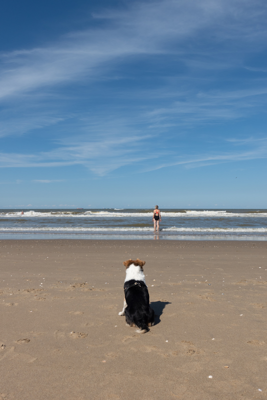
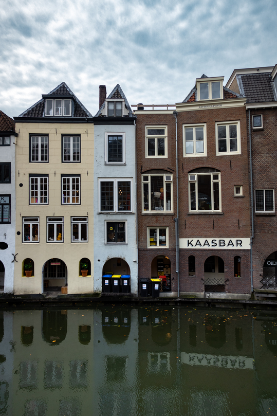
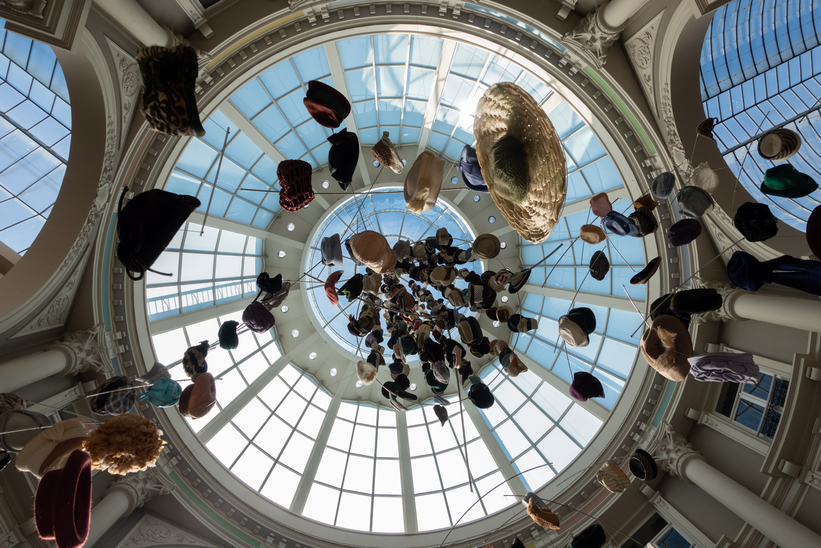
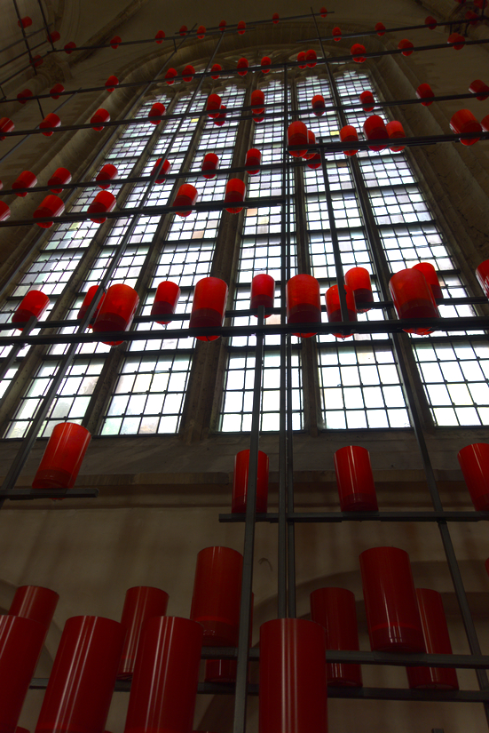
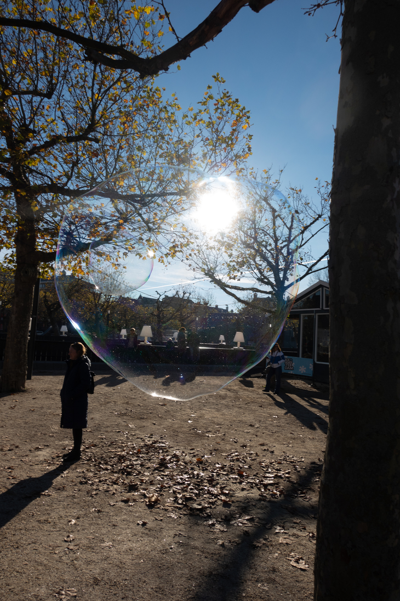
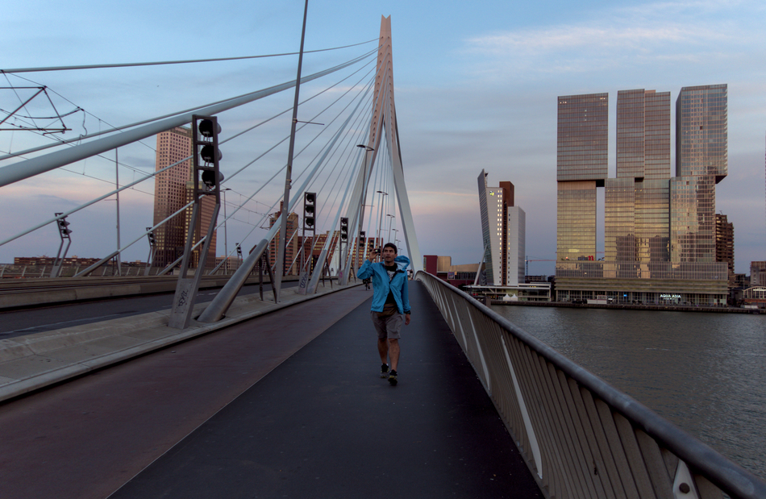
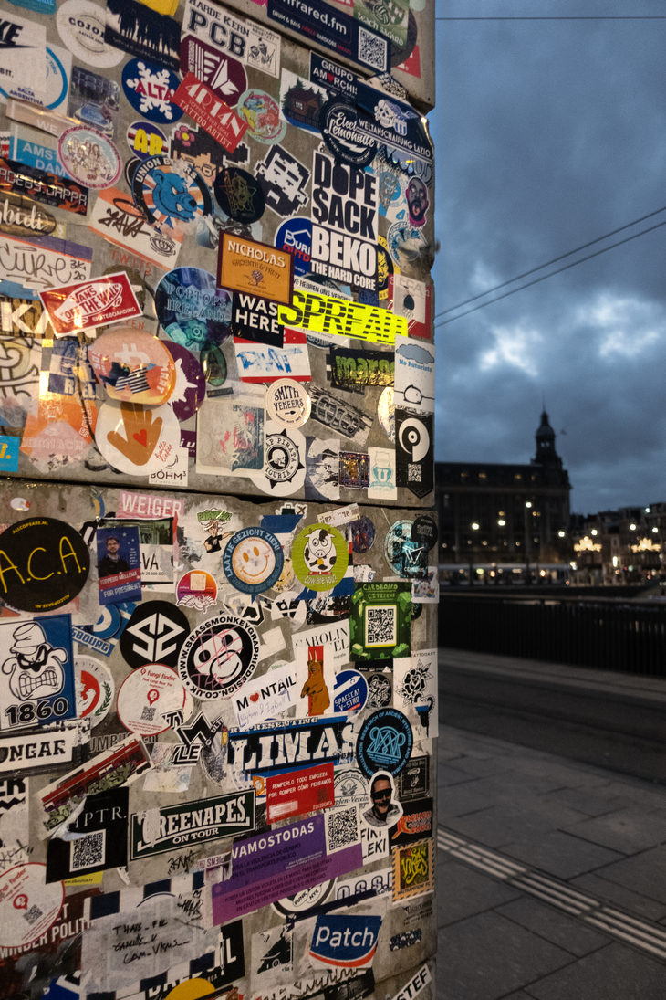
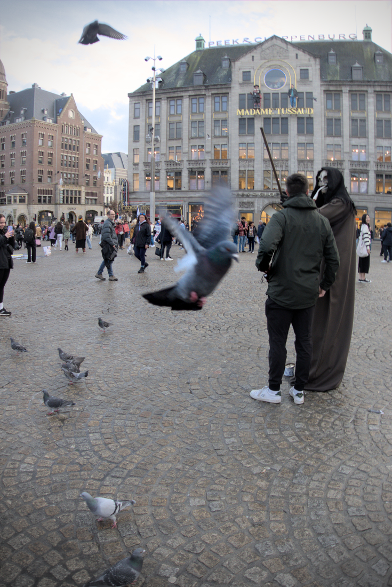
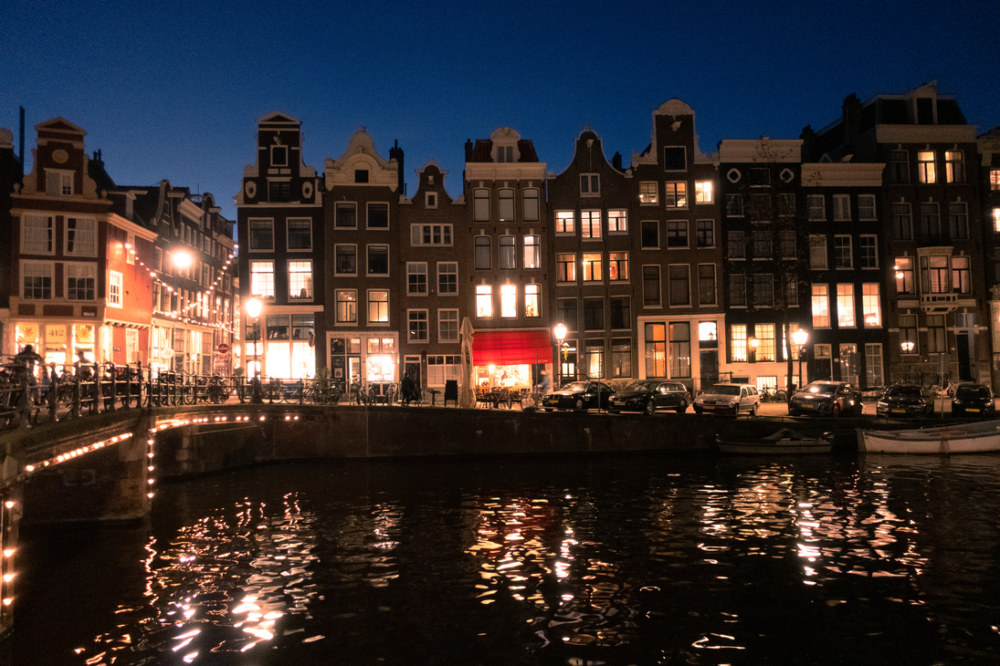

Chica at the beach in Den Haag

The Oudegracht in Utrecht

Floating hats in Den Haag

Art at the Laurenskerk in Rotterdam

Bubbles on Museumplein in Amsterdam

Erasmus bridge in Rotterdam

Amsterdam Centraal Station

Pigeons on Dam Square

Amsterdam at night